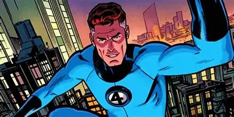
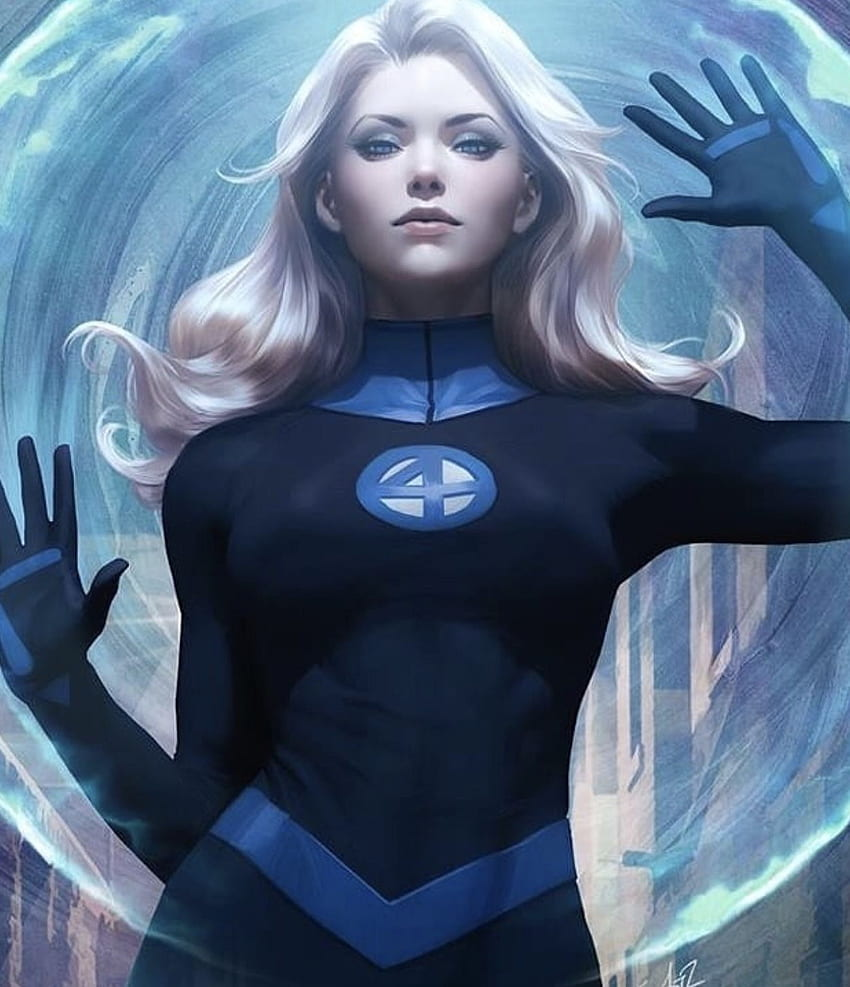
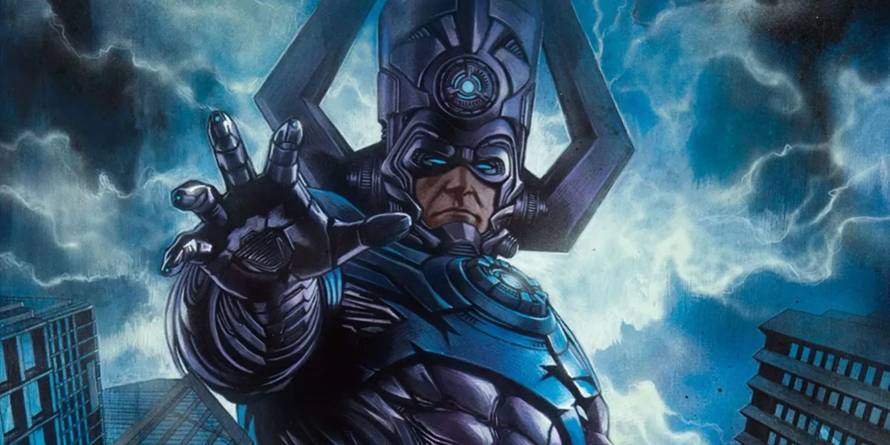
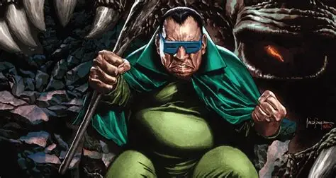
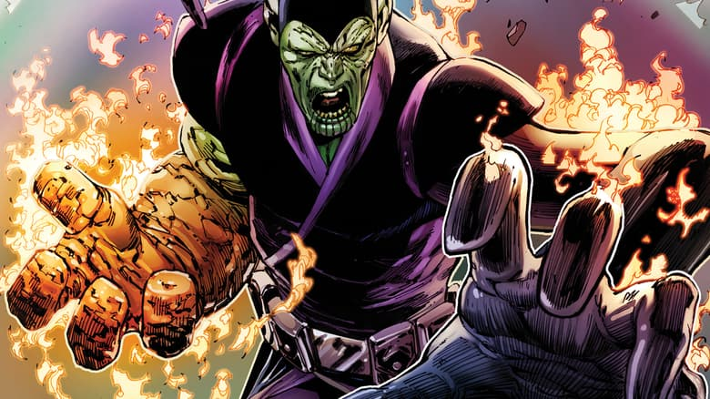

Personagens
Reed Richards

Reed Richards era um jovem cientista extremamente inteligente. Desde cedo, demonstrava interesse por matemática, física, engenharia e exploração espacial. Ele tinha o sonho de viajar para o espaço e explorar o desconhecido. Reed passou anos estudando e desenvolvendo tecnologias para tornar isso possível. Foi durante sua vida acadêmica que ele conheceu Ben Grimm, que acabou se tornando seu melhor amigo. Reed também se aproximou de Sue Storm, por quem se apaixonou. Os dois desenvolveram um relacionamento que posteriormente se tornaria um casamento
Ben Grimm
.webp)
Ben Grimm era completamente diferente de Reed. Enquanto Reed era intelectual e estudioso, Ben era um piloto experiente, corajoso e muito mais ligado à ação. Ele e Reed eram grandes amigos. Ben confiava em Reed e acreditava em seus projetos científicos, mesmo quando eles pareciam extremamente arriscados. Por causa de sua habilidade como piloto, Ben seria fundamental para a futura missão
Sue Storm

Sue Storm era uma mulher inteligente, determinada e independente. Ela conhecia Reed e acabou desenvolvendo uma relação amorosa com ele. Sue acreditava nos sonhos científicos de Reed e acompanhava de perto seus projetos. Ela também tinha uma relação muito próxima com seu irmão mais novo, Johnny Storm.
Johnny Storm
.webp)
Johnny Storm era o irmão mais novo de Sue. Ele era jovem, impulsivo, extrovertido e aventureiro. Diferentemente de Reed, que pensava muito antes de agir, Johnny gostava de velocidade, diversão e adrenalina. Johnny também tinha experiência como piloto, o que ajudaria na missão.
Poderes
Reed Richards
- Elasticidade extrema — pode esticar braços, pernas e outras partes do corpo
- Deformação corporal — consegue mudar o formato do corpo.
- Resistência a impactos — seu corpo pode absorver certos golpes e impactos.
- Alongamento dos membros — pode alcançar objetos e pessoas a grandes distâncias.
- Compressão e expansão corporal — consegue alterar o formato e a distribuição do próprio corpo.
- Intelecto extraordinário — é um dos maiores gênios científicos da Marvel.
- Conhecimento científico — domina áreas como física, engenharia, química e tecnologia.
- Criação de tecnologia avançada — constrói máquinas, armas e equipamentos extremamente sofisticados.
Ben Grimm
- Superforça — possui força física gigantesca.
- Super-resistência — seu corpo suporta golpes extremamente poderosos.
- Corpo rochoso — sua pele e músculos são semelhantes a uma estrutura de pedra
- Durabilidade extrema — é muito difícil feri-lo.
- Superpoderosos golpes físicos — seus socos podem causar enormes danos.
- Resistência física — consegue lutar durante longos períodos.
- Grande capacidade de salto — sua força permite realizar saltos enormes.
- Experiência em combate — Ben é um lutador extremamente experiente.
- Grande resistência mental — apesar de sua transformação, mantém sua personalidade e inteligência.
- Resistência a temperaturas extremas — consegue sobreviver a condições que seriam perigosas para humanos comuns.
Sue Storm
- Invisibilidade — pode tornar seu corpo invisível.
- Invisibilidade seletiva — pode tornar apenas partes do corpo invisíveis.
- Campos de força — cria barreiras de energia invisíveis.
- Rajadas de força — pode usar seus campos de força ofensivamente.
- Bolhas de força — consegue criar campos de força ao redor de objetos ou pessoas.
- Barreiras gigantes — pode proteger grandes áreas.
- Manipulação de campos de força — consegue controlar a forma e a intensidade deles.
- Levitação/voo — usando seus campos de força, consegue se deslocar pelo ar.
- Projeção de força — pode empurrar ou lançar inimigos.
- Campos de força internos — em algumas histórias, consegue criar campos de força dentro do corpo de um inimigo.
Johnny Storm
- Pyrocinese — controla o fogo
- Incendiar o próprio corpo — transforma o corpo em chamas.
- Voo — pode voar em alta velocidade.
- Rajadas de fogo — dispara fogo contra inimigos.
- Controle de temperatura — consegue aumentar sua temperatura.
- Explosões de calor — pode liberar grandes quantidades de energia térmica.
- Nova Flame — libera uma quantidade gigantesca de calor e energia.
- Manipulação das chamas — consegue controlar a forma e direção do fogo.
- Criação de correntes térmicas — pode usar o calor para alterar o movimento do ar.
- Resistência ao próprio fogo — não é queimado pelas próprias chamas.
- Absorção/manipulação de calor — em algumas histórias, consegue interagir com fontes de calor e fogo.
Vilões
Dr. Destino (Doctor Doom)

Victor von Doom nasceu na Latvéria, em uma família muito pobre. Desde jovem, demonstrou enorme inteligência e aprendeu tanto ciência quanto magia. Quando ficou mais velho, Victor estudou nos Estados Unidos e conheceu Reed Richards. Os dois eram extremamente inteligentes, mas havia uma grande diferença: Reed queria descobrir a verdade, enquanto Victor queria provar que era superior aos outros. Victor construiu uma máquina para tentar entrar em contato com outras dimensões e encontrar sua mãe, que havia morrido. Reed percebeu que havia um erro nos cálculos e tentou alertá-lo. Victor ignorou o aviso. A experiência deu errado e deixou seu rosto gravemente ferido. Victor culpou Reed pelo acidente. Depois disso, ele viajou pelo mundo, aperfeiçoou seus conhecimentos de ciência e magia e criou sua famosa armadura metálica e máscara. Ao retornar à Latvéria, tomou o poder e tornou-se seu governante. A partir daí, começou sua longa rivalidade com Reed Richards.
provar que é superior a Reed Richards e controlar o mundo
Galactus

A história de Galactus começa antes do atual Universo Marvel. Seu nome original era Galan, um habitante do planeta Taa. Galan viveu no final de um universo que estava chegando ao fim. Quando o universo morreu, Galan sobreviveu de uma maneira extraordinária e acabou se transformando em uma entidade cósmica: Galactus. Ele passou a existir no novo universo e precisava consumir a energia de planetas para continuar vivo. Por isso, Galactus viaja pelo universo procurando mundos capazes de sustentá-lo. Um dos personagens mais importantes de sua história é Norrin Radd, que se tornaria o Surfista Prateado.
sobreviver.
Homem-touperia

Harvey Elder era um homem comum, mas extremamente inteligente. Ele era considerado estranho pelas outras pessoas e acabou ficando cada vez mais isolado. Durante uma exploração, Harvey encontrou uma enorme região subterrânea. Ali existia um mundo escondido da humanidade. Ele acabou ficando quase completamente cego devido à exposição a determinadas condições daquele lugar. Harvey então adotou o nome Homem-Toupeira. Ele passou a viver no subterrâneo e descobriu criaturas gigantescas que habitavam aquele mundo. Em vez de tentar voltar para a sociedade, decidiu criar seu próprio reino. O problema? Ele começou a considerar os habitantes da superfície seus inimigos. Assim, passou a enviar suas criaturas para atacar cidades e tentar dominar o mundo da superfície. Foi um dos primeiros vilões enfrentados pelo Quarteto Fantástico.
vingança contra a humanidade
Super-Skrull

Kl'rt era um guerreiro da raça alienígena Skrull.Os Skrulls são uma espécie alienígena capaz de mudar de aparência. Quando os Skrulls começaram a enfrentar problemas com o Quarteto Fantástico, decidiram criar um guerreiro especial.Eles escolheram Kl'rt. Os cientistas Skrulls deram a ele uma combinação dos poderes dos quatro membros do Quarteto. Ele recebeu:a elasticidade de Reed;o poder de fogo de Johnny;a força de Ben;a invisibilidade e os campos de força de Sue.Assim nasceu o Super-Skrull.Ele foi enviado à Terra para derrotar o Quarteto.Porém, apesar de possuir os poderes dos quatro, o Quarteto conseguiu encontrar maneiras de enfrentá-lo. Kl'rt continuou aparecendo como inimigo em diversas histórias.
Servir ao Império Skrull.